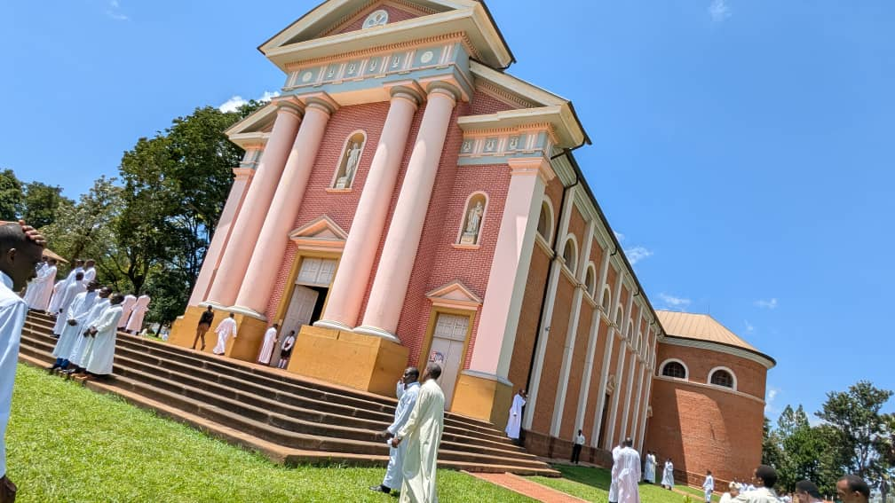
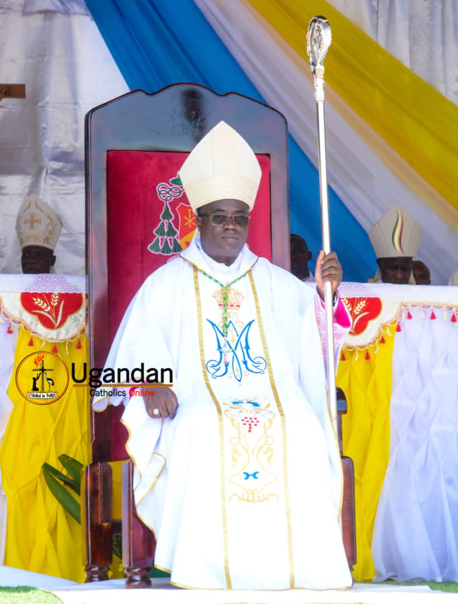
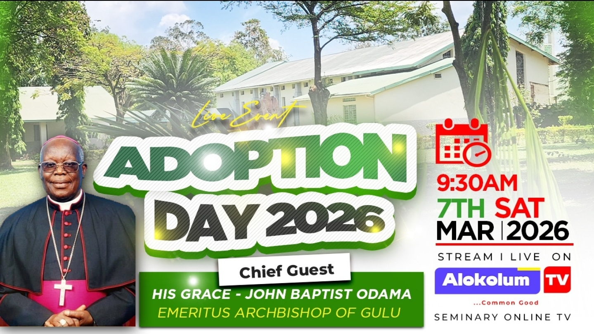
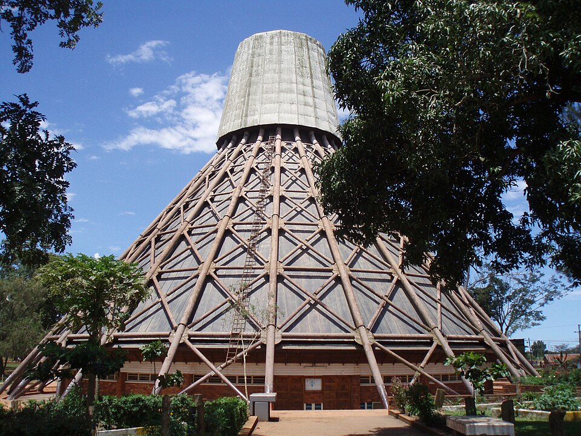

Alokulum National Major Seminary TV
Experience the light of the Uganda Martyrs and our community of faith and learning.
Live
Posts & Articles
New Semester Intake
Date: April 1, 2026
The seminary welcomes new entrants for the upcoming academic year. Orientation schedules and details will be shared soon.
Ordination Anniversary
Date: May 12, 2026
Join us in prayers and celebration as we mark the anniversary of our former rector Rt. Rev. Constantine Rupiny’s ordination as bishop.
Pilgrimage of Hope
Date: June 8, 2026
Seminarians and faithful will journey to the Holy Door as pilgrims of hope. All are welcome to participate in this spiritual adventure.
Latest Videos
About the Seminary
Alokulum National Major Seminary trains future priests with a deep devotion to the Uganda Martyrs. Our mission is to form men of faith, intellect and character who will serve the Church and our communities. Through our online TV channel, we invite you to take part in our liturgies, lectures and community life from anywhere in the world.
Contact & Support
We’d love to hear from you. Get in touch with the Seminary TV team:
- Email: info@alokulumseminary.org
- Phone: +256 123 456 789
- Address: Alokulum National Major Seminary, Gulu, Uganda
Gallery




Monthly Bulletin
Stay informed with our latest news, reflections and multimedia updates from the seminary community.